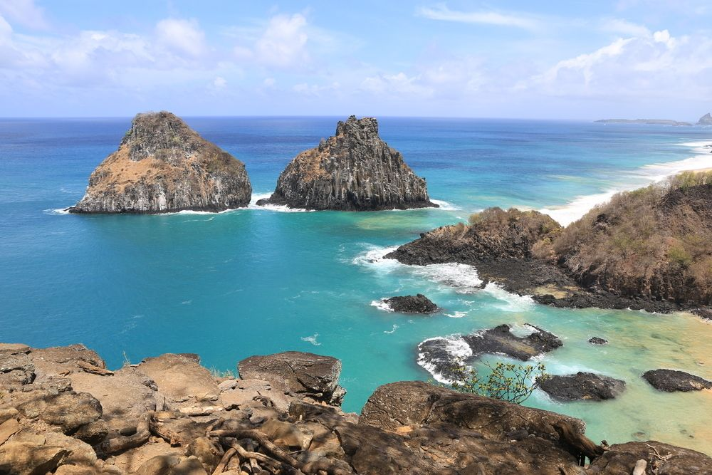
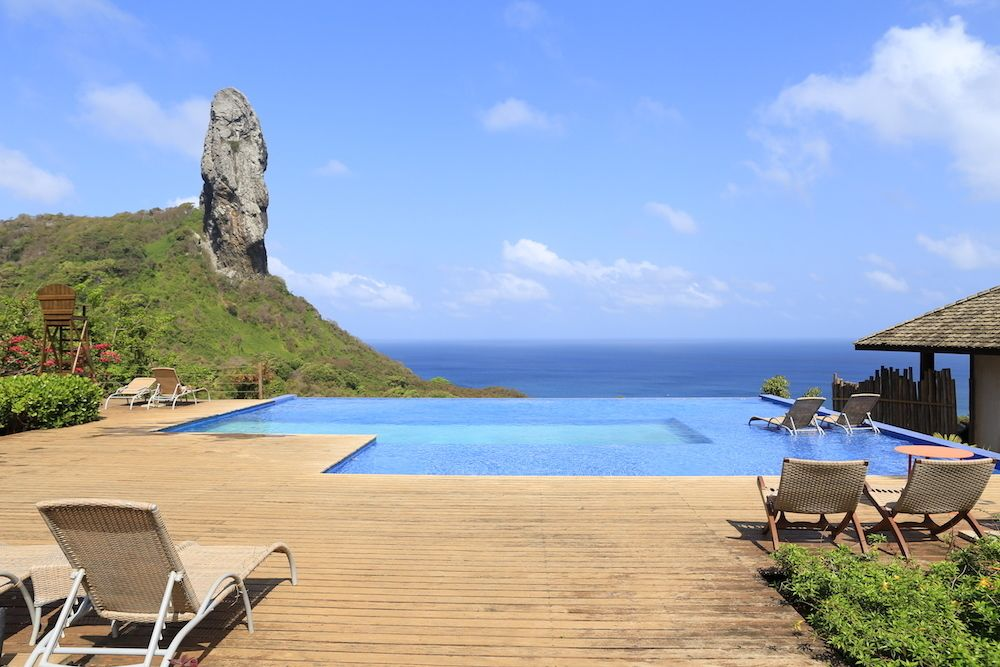

Fernando de Noronha mexe com o imaginário de muitos brasileiros. O lugar tem fama de ser uma paraíso na Terra, e quer saber? É mesmo. Algumas de suas praias são as mais bonitas do Brasil, a água tem uma coloração incrível e a vida marinha... ah, essa é tão rica que é quase impossível descrever. O mergulho com cilindro é considerado um dos melhores do mundo e, mesmo nas praias, você pode nadar entre pequenos tubarões e tartarugas.
Sobre Fernando de Noronha
Com 21 ilhas e ilhotas, apenas 17km² e a menor BR do Brasil, há quem duvide que Fernando de Noronha mereça todos os elogios que se ouve, mas é tudo verdade, ninguém exagerou. Af beleza do lugar é inquestionável. Quando se fala em natureza, preservação e biodiversidade, o distrito, que pertence a Pernambuco, está de parabéns. Só vendo para crer.
Basta um mergulho pelas águas cristalinas da Baía do Sancho ou um snorkel na Baía dos Porcos para entender a magia de Noronha. As praias recortadas em meio a grandes formações rochosas parecem ter sido desenhadas à mão. A mistura de tons verdes, azuis-claros e escuros do mar são o cenário perfeito para quem busca tranquilidade e um pouco de inspiração.
Fique o máximo de dias que puder nesse paraíso é ande, conheça, explore e se encante com esse lugar que, orgulhosamente, faz parte de nosso país.
Quando ir a Fernando de Noronha - melhor época
Fernando de Noronha pode ser aproveitada o ano inteiro porque sempre faz calor e sol por lá. A alta temporada acontece especialmente entre meados de dezembro até o Carnaval, especialmente no período próximo ao Réveillon e janeiro — nessa época a cidade ilha fica bem movimetada e com preços poucos convidativos.
Os meses entre março e julho são mais chuvosos enquanto entre agosto e fevereiro é mais seco. Viajar entre os meses com mais chuvosos, no entanto, não significa pegar vários dias de chuva, isso pode variar bastante e permitir que você curta bons dias de sol. Confira aqui as dicas completas de quando ir a Fernando de Noronha e saiba quais são os meses de mais e menos ondas.
Como chegar a Fernando de Noronha
Noronha é uma ilha e chegar até lá só pode ser feito através de avião ou embarcação. Atualmente os cruzeiros não são permitidos, por isso é necessário voar até lá — a Gol tem voos a partir do Aeroporto de Recife, enquanto a Azul tem voos que partem do Recife e também de Natal. Encontramos com frequência passagens aéreas em promoção para Fernando de Noronha, baixe o app do Melhores Destinos e fique por dentro das últimas promoções!
O que fazer em Fernando de Noronha
Aproveitar as praias, fazer algumas trilhas, fazer passeios de barco, mergulhar, surfar e, claro, relaxar estão entre as principais atividades para fazer em Noronha. A ilha é um destino sem igual para quem procura por tranquilidade e belas paisagens naturais, mas pode ser também um lugar gostoso para praticar exercícios, ainda mais com o visual que possui. São diversas as possibilidades que Noronha oferece, desde programas mais pacatos, como aproveitar um fim de tarde na Praia da Conceição até praticar mergulho ou snorkeling e admirar tubarões ou fazer o aquasub, uma espécie de mergulho com uma pequena prancha.
Pousadas em Fernando de Noronha - onde ficar
Fernando de Noronha tem uma boa quantidade de pousadas e poucos hotéis. O lugar tem pousadas de basicamente três "níveis", as pousadas familiares, que pertencem a pessoas nativas da ilha e geralmente são mais simples e econômicas, as pousadas de médio custo, e as pousadas mais luxuosas. Já ficamos hospedados nessas três classes de pousadas em Fernando de Noronha e cada uma delas tem o seu diferencial.
Para quem busca pousadas econômicas e familiares, já ficamos na Pousada da Maga; para quem quer um meio termo, sugerimos a Pousada da Germana e para uma acomodação mais elegante, a Pousada Morena é incrível!
Praias de Fernando de Noronha
Curtir as praias com certeza é uma das principais atividades em Noronha. São tantas praias lindas que talvez você até tenha dificuldades em escolher uma preferida! Durante sua viagem não dá para deixar de ir à Baía do Sancho, já considerada uma das praias mais bonitas do mundo! Sua vizinha, a Baía dos Porcos também não fica para trás e não deve faltar em nenhum roteiro — a partir do acesso superior da Praia do Sacho você pode conferir um mirante maravilhoso com vista para essas duas praias, com certeza entre as mais bonitas da ilha.
Para quem quer praticar snorkeling, vale a pena reservar algumas horas para a Praia do Sueste e se você quer pegar ondas, o point da ilha é Cacimba do Padre. A Praia do Cachorro, perto da vila dos Remédios (centro de Noronha) também é muito bacana, tem piscinas naturais e prática por seu acesso descomplicado.
Vale lembrar que boa parte das praias de Fernando de Noronha fazem parte do Parque Nacional Marinho de Fernando de Noronha, local com acesso controlado e que só pode ser visitado mediante pagamento de um ingresso, que dá acesso a todas as praias do Parque.
Quantos dias ficar em Fernando de Noronha
5 dias completos é um bom período para curtir Fernando de Noronha, rodar por suas praias, fazer passeios e relaxar. Se você tiver mais tempo disponível, ainda melhor porque assim poderá fazer suas atividades com mais calma.
Informações sobre Fernando de Noronha
- Noronha foi uma base militar com ótimo sistema de fortificação e também prisão, que deixaram como herança fortalezas hoje em ruínas, que oferecem uma bela vista para o pôr do sol.
- Hoje em dia a área da ilha está dividida entre a Área de Preservação Ambiental (APA) e o Parque Nacional Marinho, que têm a finalidade de proteger a ilha, seus animais e ecossistema. Por isso, o visitante que desembarca em Noronha deve pagar uma taxa de preservação que varia de acordo com os dias de permanência e também o ingresso ao Parque Nacional Marinho de Fernando de Noronha, que dá acesso a praias como Baía do Sancho e Praia do Sueste.
- Fernando de Noronha é conhecido como um destino caro e infelizmente a crença popular é real. O turista que vai a Noronha precisa desembolsar um bom dinheiro, já que tudo chega na ilha apenas de avião ou por embarcações — mas não desanime, o lugar vale cada centavo! Confira aqui todas as dicas de Fernando de Noronha.
Fonte da materiaDesenvolvido no dia 20/01/2023